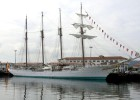

13/03/2013 - 15:14
El ‘Pakea Bizkaia’ regresa al Hemisferio norte
El Pakea Bizkaia se encuentra ya en el Hemisferio norte tras volver a cruzar hoy el Ecuador. Los objetivos marcados para la expedición que encabeza el navegante Unai Basurko en las 3.000 millas que le separan antes de arribar a Bilbao son las islas de Cabo Verde, la latitud de las Islas Canarias y arrumbar hacia las costas gallegas.
15/02/2013 - 13:26
El 'Juan Sebastián Elcano' atraca en Ferrol tras 13 años sin escala
Con la marea alta y el velamen desplegado, el 'Juan Sebastián Elcano' sorteó esta mañana la estrecha bocana de la ría ferrolana empujado por un suave nordés. Solo los madrugadores llegaron a tiempo de ver la estampa de un buque octogenario de 113 metros de eslora (largo) navegando a vela —tiene 20 que suman 3.151 metros cuadrados de tela— entre los castillos de La Palma y San Felipe, dos fortalezas militares de la Ilustración que guardan la entrada a la ciudad naval.
20/08/2012 - 10:56
A Colombia a toda vela
De noche, las manta rayas chapotean en las aguas de Chichimé. El ajetreo se escucha en toda la laguna, en la pequeña vecindad de veleros que se instala junto a la playa al atardecer. Chichimé es el nombre que dan los indígenas Kuna Yala a dos de las 340 islas del archipiélago de San Blas, en la costa caribeña de Panamá. Los Kuna Yala gestionan las plantaciones de cocoteros de estas minúsculas porciones de tierra y ven pasar los veleros que van camino de Colombia.
22/06/2012 - 23:48
“¡Ballena a la vista, lo juro!”
 Por fin después de más de medio siglo de vida pude lanzar en su contexto el grito por el que había esperado tanto: “¡Por allí resopla!”. No hubo ninguna reacción a bordo y mi aviso entusiasta se perdió en el mar mientras el velero volvía a quedar envuelto en un silencio de salitre punteado por el tintineo de las botellas vacías que rodaban en cubierta. “¡Ballena, ballena a la vista, lo juro!”,
Por fin después de más de medio siglo de vida pude lanzar en su contexto el grito por el que había esperado tanto: “¡Por allí resopla!”. No hubo ninguna reacción a bordo y mi aviso entusiasta se perdió en el mar mientras el velero volvía a quedar envuelto en un silencio de salitre punteado por el tintineo de las botellas vacías que rodaban en cubierta. “¡Ballena, ballena a la vista, lo juro!”,
11/08/2009 - 09:33
Interceptado en alta mar un velero con 250 kilos de cocaína
La policía se incautó de 250 kilos de cocaína transportada a bordo de un velero que fue interceptado el pasado jueves a 500 millas de Finisterre.
©2013 VELA | Paseo Marítimo 145-147 · 08547 Barcelona · tel. 93 414 24 03 · fax. 93 414 24 04